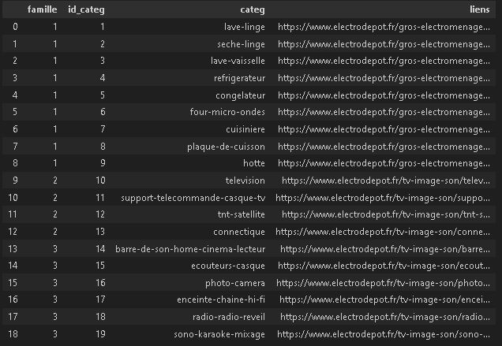
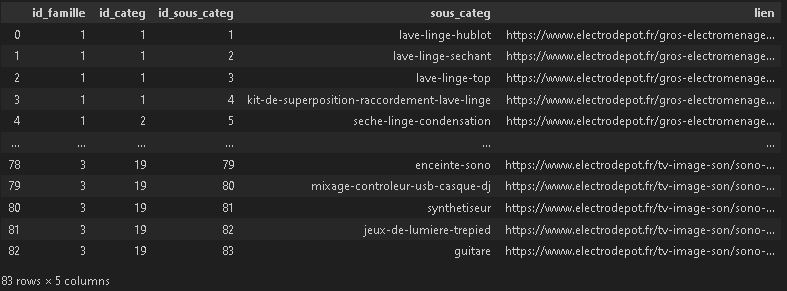
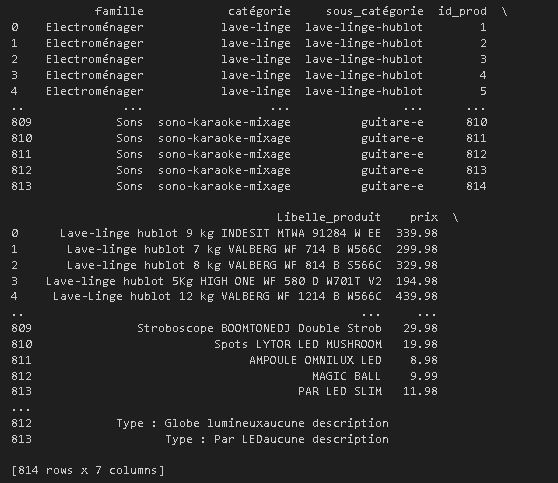

Alimentation d'une base de données
Lors de ma première année de BUT Science des Données (STID), j'ai participé à un projet passionnant visant à collecter des informations à partir d'un site internet
et à les intégrer dans une base de données. L'objectif principal était de scraper les informations des produits d'un site internet pour alimenter une base de données créée au préalable.
Nous étions deux à travailler sur ce projet et avons choisi de scraper Electro-Dépôt.
Étapes clés du code Python :
- Utilisation de Python pour le scraping des données du site internet.
- Utilisation de Beautiful Soup et Requests pour le web scraping.
- Utilisation de Pandas pour la manipulation des données et la création des dataframes.
- Utilisation de MySQL pour la gestion de la base de données.
- Utilisation de PhpMyAdmin pour l'administration de la base de données.
Structure de la base de données :
La structure de la base de données comprenait plusieurs tables :
- Table Famille : Cette table est la seule qui a été créée à la main car elle représentait seulement les différentes familles de produits (électroménager, son, image) avec une clé primaire représentant un ID.
- Table Catégorie : Chaque famille de produits était divisée en catégories, avec un ID de catégorie et un label. Cette table était créée à partir des données collectées et était liée à la table Famille par ID de famille.
- Table Sous-catégories : Similaire à la table Catégorie mais pour les sous-catégories, liée à la table Catégorie par l'ID de catégorie.
- Table Produit : Cette table rassemblait toutes les informations liées aux produits telles que le prix, le label et la description, et était liée à la table Sous-catégorie.

Le premier dataframe contient les données scrapées des catégories de produits.

Le deuxième dataframe contient les données des sous-catégories de produits.

Le dernier dataframe contient les données des produits.
L'intégralité des produits est récupérée. C'est-à-dire que si une sous-catégorie de produits sur le site possède plusieurs pages, le script les détecte et les scrappe.
Après avoir créé les dataframes, ils sont convertis en fichiers CSV. L'étape suivante était de les insérer dans les tables créées sur PhpMyAdmin.
Points à retravailler
- Malheureusement, la connexion à la base ne fonctionnait pas. Par manque de temps, je n'ai pas pu corriger cela.
- Un autre souci est que le script n'est pas conçu pour durer dans le temps. Si les liens du site changent de format, par exemple avec plus ou moins de "/", cela peut entraîner des erreurs.
Compétences développées
- Conception et gestion d'une base de données.
- Développement Python et Web Scraping.
- Manipulation de données avec Pandas.